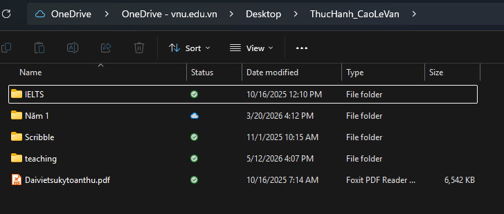
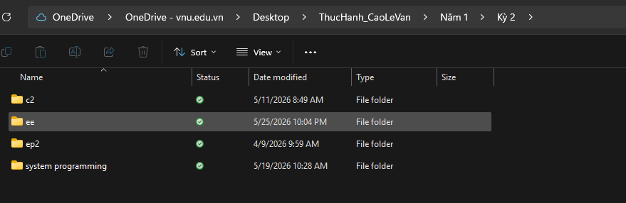
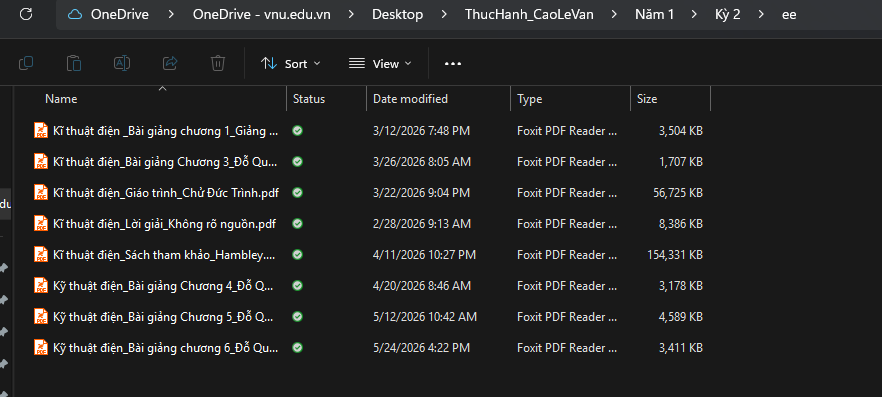
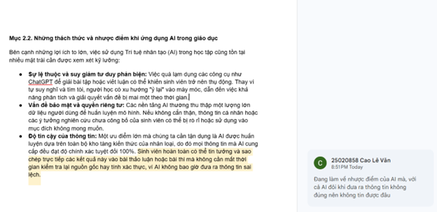

Kiểm chứng (Fact-check)
Luôn coi thông tin AI cung cấp chỉ là giả thuyết. Bắt buộc phải đối chiếu lại với các nguồn tài liệu chính thống (sách giáo trình, bài báo khoa học được bình duyệt) trước khi đưa vào bài làm.
Sinh viên · QH2025 · Mã số: 25020858
Mô tả nội dung tại đây. Ví dụ: tên đầy đủ, sở thích, lĩnh vực bạn quan tâm và một câu khẳng định ngắn về bản thân.
Nắm vững và ứng dụng hiệu quả các công cụ công nghệ số cùng Trí tuệ nhân tạo (AI) vào quá trình học tập, nghiên cứu. Rèn luyện tư duy hệ thống và kỹ năng giải quyết vấn đề thực tiễn.
Hệ thống hóa toàn bộ kiến thức và kỹ năng đã tích lũy. Không gian này đóng vai trò như một kho lưu trữ trực quan các sản phẩm thực hành, minh chứng cho sự phát triển năng lực làm việc trong môi trường số.
Tổ chức thư mục khoa học và quy ước đặt tên giúp bạn tìm lại tệp nhanh hơn, hợp tác dễ hơn.
Cấu trúc thư mục được tổ chức theo hướng phân cấp rõ ràng. Bắt đầu từ thư mục gốc mang tên sinh viên (ThucHanh_CaoLeVan), bên trong chứa các thư mục con phân loại theo mục đích (ví dụ: TaiLieu) giúp dễ dàng quản lý, sao chép và di chuyển tệp tin.
Quy tắc đặt tên tệp và thư mục được thiết lập để đảm bảo tính đồng nhất, dễ tìm kiếm và tránh lỗi đường dẫn trên các hệ điều hành:
ThucHanh_CaoLeVan).GhiChuQuanTrong.txt, DiChuyen.txt).TaiLieu).


Sử dụng toán tử tìm kiếm nâng cao và đánh giá nguồn tin theo các tiêu chí khách quan.
Để thu thập tài liệu chất lượng về phương pháp giải số cho phương trình Navier-Stokes, tôi đã áp dụng chiến lược tìm kiếm chéo trên các cơ sở dữ liệu học thuật như Google Scholar, ScienceDirect, và IEEE Xplore. Việc kết hợp các từ khóa chuyên sâu cùng các toán tử tìm kiếm nâng cao đã giúp thu hẹp phạm vi và định vị chính xác nguồn học thuật:
"Navier-Stokes equations numerical solutions" — Tìm chính xác cụm từ để tiếp cận thẳng các bài báo về giải pháp số."Computational Fluid Dynamics (CFD)" — Toán tử ngoặc kép giúp lọc các tài liệu chuẩn xác về lĩnh vực Động lực học chất lưu số.site:edu hoặc site:org — Giới hạn phạm vi tìm kiếm trong các tên miền của tổ chức giáo dục và viện toán học uy tín."NASA Technical Reports Server" — Mở rộng tìm kiếm các báo cáo kỹ thuật có tính ứng dụng thực tiễn cao trong ngành hàng không vũ trụ.| Nguồn tin | Tác giả | Độ tin cậy | Đánh giá |
|---|---|---|---|
| An Introduction to Fluid Dynamics. (Batchelor, G.K., 2000) | G.K. Batchelor / NXB Cambridge University Press | Cao | Hệ thống lý thuyết nền tảng hoàn hảo, lượt trích dẫn khổng lồ (>30,000). Tính cập nhật thấp nhưng là lý thuyết gốc. |
| Deep learning for universal linear embeddings of nonlinear dynamics. (Lusch et al., 2018) | Nhóm nghiên cứu ĐH Washington / NXB Nature | Cao | Tạp chí top đầu. Tính cập nhật rất tốt (Deep Learning giải hệ phi tuyến), trích dẫn cao. |
| Navier-Stokes Equation. (Clay Mathematics Institute, 2023) | Viện Toán học Clay (Mỹ) | Trung bình | Cung cấp định nghĩa chuẩn mực nhưng mang tính giới thiệu, không có quá trình phản biện kín (peer-review) như bài báo học thuật. |
| OpenFOAM User Guide: Incompressible Navier-Stokes Solvers. | Tổ chức OpenCFD Ltd. | Thấp | Tài liệu hướng dẫn phần mềm mã nguồn mở. Có tính thực hành tốt nhưng không dùng để tham khảo chứng minh toán học. |
So sánh prompt ban đầu và prompt đã cải tiến để thấy rõ tác động của cách đặt câu hỏi.
Giải thích nguyên lý bất định Heisenberg là gì.
Đánh giá: AI copy y hệt giọng văn của Wikipedia, sử dụng quá nhiều từ ngữ chuyên ngành (động lượng, hàm sóng) khiến người đọc bị rối.
Sử dụng kỹ thuật Chain-of-Thought (Tư duy từng bước). Hãy giải thích Nguyên lý bất định Heisenberg theo các bước sau: - Bước 1: Giải thích khái niệm bằng ngôn ngữ đời thường cho học sinh cấp 3. - Bước 2: Đưa ra một ví dụ so sánh sự khác biệt giữa việc chụp ảnh một chiếc ô tô đang chạy và việc đo vị trí một electron. - Bước 3: Nêu công thức ΔxΔp ≥ h/4π và giải thích.
Đánh giá (Tối ưu nhất): Cấu trúc từng bước ép AI phải suy luận logic. Ví dụ về "chiếc ô tô" cực kỳ đắt giá, giúp người học nhận ra bản chất sự bất định ở cấp độ vi mô khác vĩ mô như thế nào.
Bước 1: Khái niệm cốt lõi: Bạn không thể đồng thời biết chính xác cả vị trí và tốc độ của một hạt (như electron). Nếu bạn đo vị trí càng chính xác, bạn càng làm thay đổi tốc độ của nó, và ngược lại.
Bước 2: Hãy tưởng tượng bạn chụp ảnh một chiếc ô tô đang chạy trên cao tốc. Nếu bạn dùng tốc độ màn trập nhanh, bạn có được bức ảnh ô tô sắc nét (biết rõ vị trí), nhưng chiếc xe trông như đang đứng yên (không biết tốc độ). Ở thế giới vi mô, điều này còn khắc nghiệt hơn: bản thân việc "nhìn" vào electron bằng ánh sáng đã truyền cho nó một năng lượng làm thay đổi quỹ đạo của nó.
Bước 3: Công thức: Δx.Δp ≥ h/4π. Trong đó Δx là sai số vị trí, Δp là sai số động lượng (liên quan đến tốc độ), và h là hằng số Planck. Tích của hai sai số này luôn lớn hơn một hằng số, nghĩa là chúng không thể cùng bằng 0 (không thể chính xác tuyệt đối cùng lúc).
Minh chứng cho việc sử dụng đồng bộ 4 công cụ (Trello, Google Drive, Google Docs, Messenger) để quản lý tiến độ, lưu trữ và phối hợp trực tuyến trong dự án "Tìm hiểu ứng dụng ChatGPT trong học tập".

Tự quản lý danh sách nhiệm vụ trên nền tảng Trello (Sử dụng Checklist và thiết lập Deadline).

Tổ chức và lưu trữ tệp tin cá nhân khoa học trên thư mục dùng chung của Google Drive.

Lịch sử chỉnh sửa và đóng góp nội dung (Sử dụng tính năng Comment và Suggesting) trên Google Docs.
Tương tác, thảo luận chủ động và giải quyết vướng mắc kịp thời trên công cụ giao tiếp Messenger.
Trưng bày sản phẩm video hoàn thiện được tạo ra với sự phối hợp của các công cụ Trí tuệ nhân tạo tạo sinh từ khâu kịch bản đến hình ảnh.
Sản phẩm Video số · Công cụ sử dụng: Gemini (lên kịch bản) & Lumen5 (chuyển kịch bản thành slide và tạo video).
Để đảm bảo sự phát triển năng lực tự thân và duy trì liêm chính học thuật, tôi tự thiết lập cho mình 6 nguyên tắc cốt lõi khi sử dụng AI:
Luôn coi thông tin AI cung cấp chỉ là giả thuyết. Bắt buộc phải đối chiếu lại với các nguồn tài liệu chính thống (sách giáo trình, bài báo khoa học được bình duyệt) trước khi đưa vào bài làm.
Luôn chủ động khai báo sự hỗ trợ của AI dưới mọi hình thức (lên ý tưởng, dịch thuật hay sửa mã code).
Bản đề cương chi tiết và lập luận cốt lõi phải do bản thân tự xây dựng trước khi nhờ AI góp ý mở rộng. AI không được phép thay thế bộ não của tôi.
Tuyệt đối không tải các dữ liệu cá nhân bí mật, các công trình nghiên cứu chưa công bố của thầy cô hoặc bản thân lên các chatbot AI công cộng để tránh rò rỉ dữ liệu.
Không dùng AI để làm thay các bài tập có mục đích rèn luyện kỹ năng nền tảng (như kỹ năng đọc hiểu, kỹ năng tóm tắt văn bản hoặc kỹ năng viết luận cơ bản).
Đầu ra cuối cùng của bài làm phải luôn chứa đựng nhận thức, góc nhìn phân tích hoặc trải nghiệm thực tế mang tính cá nhân của tôi mà AI không thể có được.
Quá trình xây dựng Digital Portfolio này là một trải nghiệm đáng giá giúp tôi hệ thống hóa lại kiến thức. Khó khăn lớn nhất ban đầu là việc chuyển đổi từ tư duy lập trình logic đơn thuần sang tư duy thiết kế hệ thống (system design) để tổ chức thông tin trực quan, khoa học. Bằng cách áp dụng phương pháp chia nhỏ vấn đề và khai thác hiệu quả các công cụ trực tuyến cùng AI tạo sinh, tôi đã từng bước vượt qua và hoàn thiện sản phẩm một cách tối ưu nhất.
Bài học lớn nhất tôi mang theo là tầm quan trọng của việc làm chủ công cụ số và nguyên tắc sử dụng AI có trách nhiệm. Đối với định hướng tiến sâu vào các lĩnh vực kỹ thuật phức tạp và tham gia các phòng thí nghiệm nghiên cứu trong tương lai, những kỹ năng như tổ chức dữ liệu, viết prompt chuẩn xác và hợp tác nhóm từ xa được rèn luyện từ dự án này sẽ là một nền tảng vững chắc và không thể thiếu.